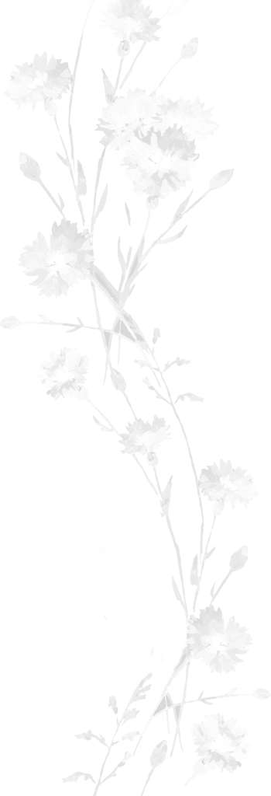
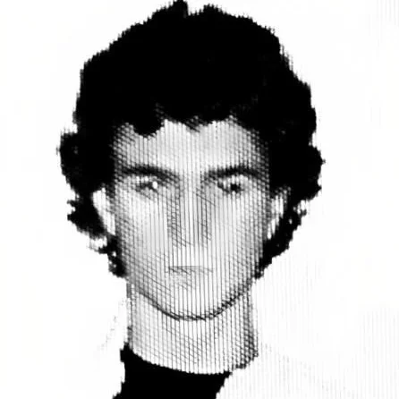

Risu Jannise is a visual artist working with major music artists, where he takes on the full production cycle: from directing and cinematography to editing and color grading — or works as a precise specialist wherever needed.
Starting from his first edit reels in 2017 and debut music video in 2021, today he is expanding his vision and scope — art direction and deep engagement in the creative environment in collaboration with other artists.
He works on a permanent basis with 9mice. Among other names he has worked with — Egor Kreed, Anikv, madk1d and Nettspend and others.
In parallel, Risu is developing his own project TRAYMA — a creative-ideological movement in its early stages.